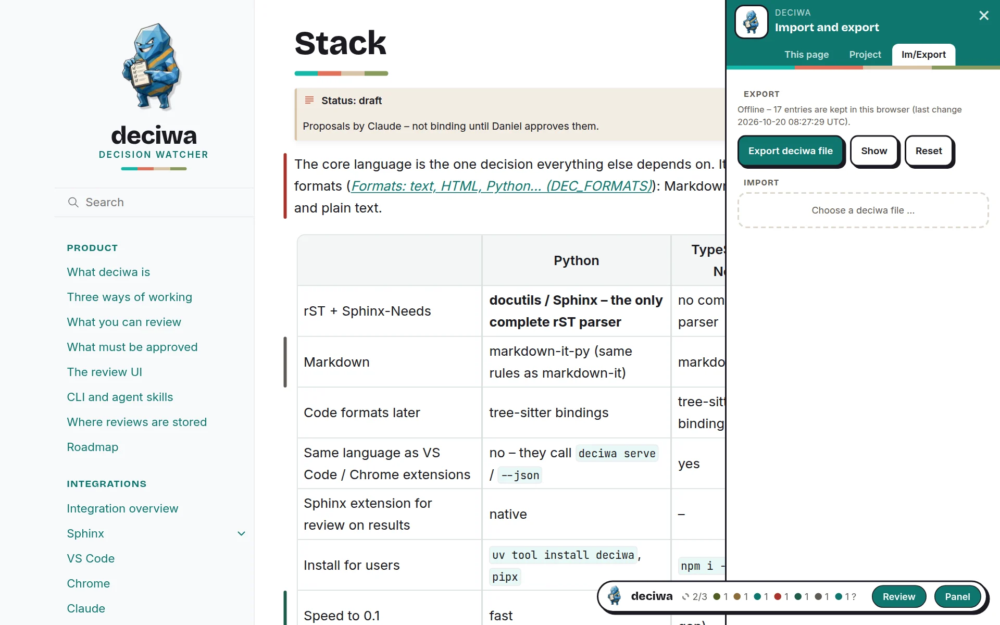

Workflow¶
With the server¶
$ deciwa serve # build, serve, watch – http://127.0.0.1:4337
Build –
deciwa servebuilds the docs once, then watches the sources and the extension; every change triggers an incremental rebuild, and open pages reload by themselves, keeping their scroll position.Review – open a page, turn on Review (
Shift+R) and give feedback. Everything is written to.deciwa/annotations/at once.Work – the AI or a developer takes the open jobs:
$ deciwa todo # what to do: comments, rejects, deletes, questions $ deciwa resolve <id> --note "…" # done
With Claude, say “work through the deciwa feedback” – see Claude.
Check – the changed sources are rebuilt; an approved text that changed is now
staleand shows the old and the new wording. Approve it again or give new feedback.Commit –
.deciwa/goes into Git together with the docs.
deciwa status shows the coverage of the whole project in the terminal; the
panel’s Project tab shows the same in the browser.
Offline¶
Without deciwa serve the overlay works on its own: a plain static build, a
laptop without the CLI, or a demo on a website.
$ sphinx-build -b html -D deciwa_mode=offline -D deciwa_offline_annotations=0 \
docs docs/_build/offline
Open
index.htmlstraight from the folder (file://), pass the folder on as a ZIP, or publish it as static files – no server needed.The deciwa button shows offline; feedback is kept in this browser and survives reloads and page changes.
The panel tab Im/Export downloads everything as one deciwa file, loads one into the browser, or resets to what the build shipped.
Bring an export into the repository:
$ deciwa import deciwa-review-20261019T2021.json
Import and export¶
A deciwa file holds the review data of the whole project plus two times: when it was exported and when the data last changed.
No merge – an import replaces all review data.
Never older over newer – the server and
deciwa importrefuse a file whose last change is older than the project’s;deciwa import --forceoverrides that. The browser warns instead.deciwa export [file]writes the same file from the command line.

The panel tab Im/Export.¶
Publishing a review build¶
For a public demo set deciwa_mode=offline and
deciwa_offline_annotations=0: nothing is sent anywhere, and visitors start
with an empty review in their own browser.